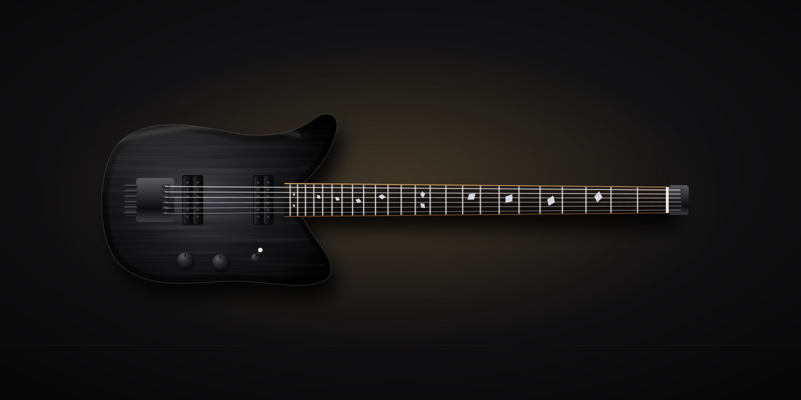
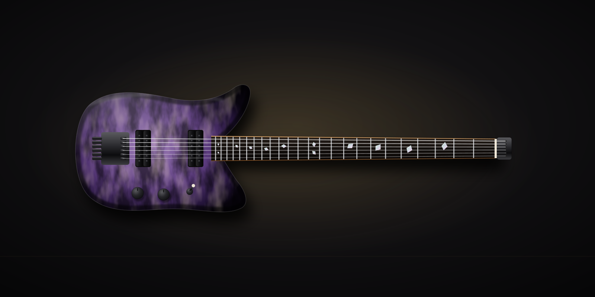

The Scoria
Scoria is volcanic rock full of air pockets, light enough to float. The guitar is headless, chambered and balanced to sit level on the strap. Fanned frets keep the low strings tight and the high strings easy to bend. Tuning happens at the bridge, so the neck ends at the nut.
Standard build
Tight, even and clear across extended range. For progressive and modern metal players, travelling players, and anyone whose shoulder has opinions.
Everything here is a starting point. Woods, profile, radius, pickups, hardware and finish can all change during your spec call.
| Body | Chambered swamp ash or korina, ergonomic contours throughout |
|---|---|
| Neck | Quench neck: five-piece kiln-roasted maple, bolt-on with a sculpted heel. Profile hand-carved to your measurements (thin D by default). |
| Fretboard | Ebony or roasted maple, 16″ radius, 24 stainless steel fanned frets, pearl shard inlays |
| Scale (multiscale) | 6-string 25.5″–27″ · 7-string 25.5″–27.5″ · 8-string 26.5″–28.5″ |
| Pickups | Two humbuckers with coil split, matched to string count and scale |
| Bridge | Headless bridge with tuners at the body; string clamp at the nut |
| Weight | Typically 5.6–6.6 lb |
| In the case | Compact hardshell case, Provenance File, setup report |
Quench neck, standard on every Scoria
Quench is how we make every neck: maple roasted in our own kiln, laminated from five quartersawn strips, then rested at least 60 days before it is carved by hand. The result is a neck built to resist seasonal movement, with a dry, glassy feel under the hand.

Sound clips and video
We’ll record every model dry and through an amp, with no mixing tricks, as soon as the first instruments are finished.
Playthrough of the Scoria: clean, crunch and high gain.
Clean, direct in.
Through an amp, mic’d.
What comes with it
- Instrument number, one sequence across every model starting at No. 1, stamped in the neck heel and logged in our build register.
- Signed build sheet with your full spec and final setup measurements: action, relief, pickup heights, weight.
- Wood-source record: species, supplier, board ID and the Quench batch your neck came from.
- Luthier’s signature from the one person who built it, start to finish.
Related
- Headless vs. traditional guitars: an honest comparison
- How a custom guitar build works, and what it costs
- The Tephra, superstrat, from $4,800
- The Rhyolite, chambered offset, from $5,200
- The Basalt, single-cut, from $5,900
Make the Scoria yours.
Send a build request with the Scoria pre-selected. A luthier replies within two business days with questions, not a sales pitch.
Configure the Scoria